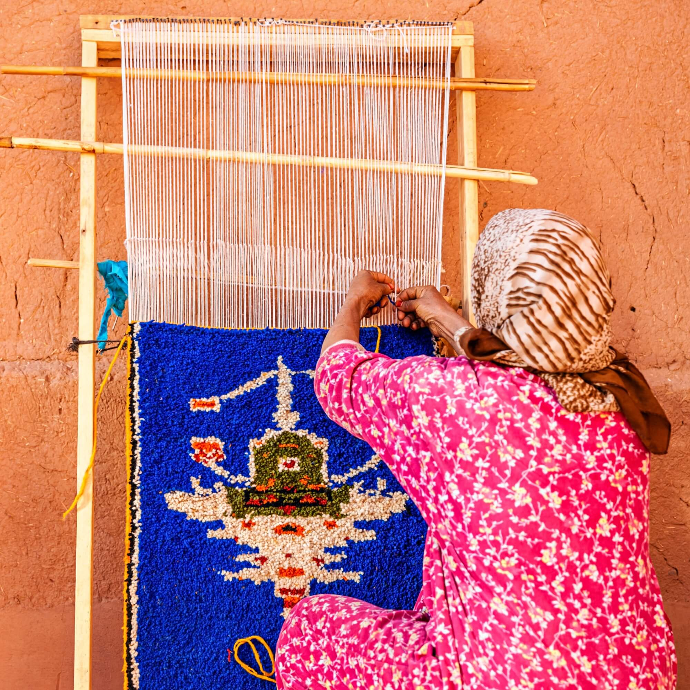
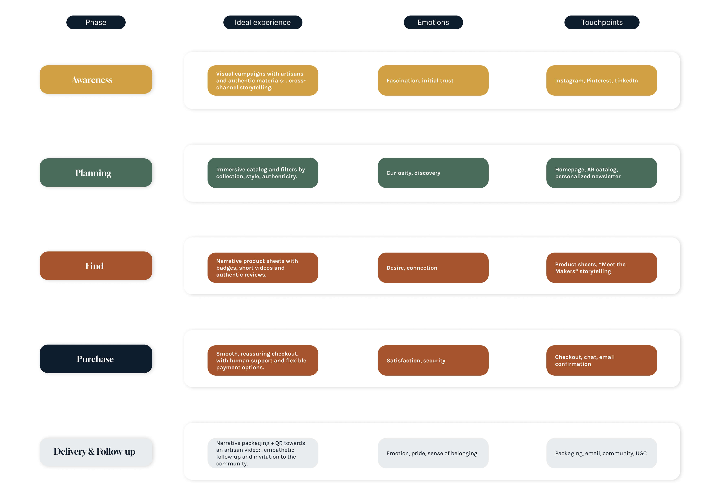
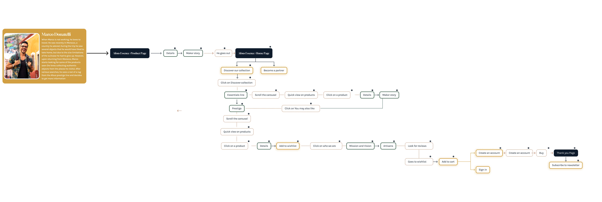
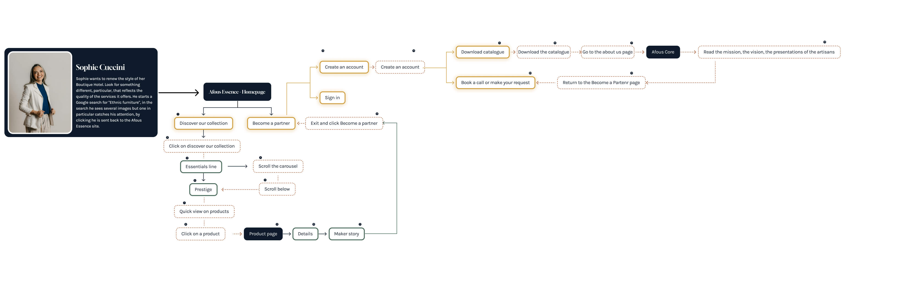
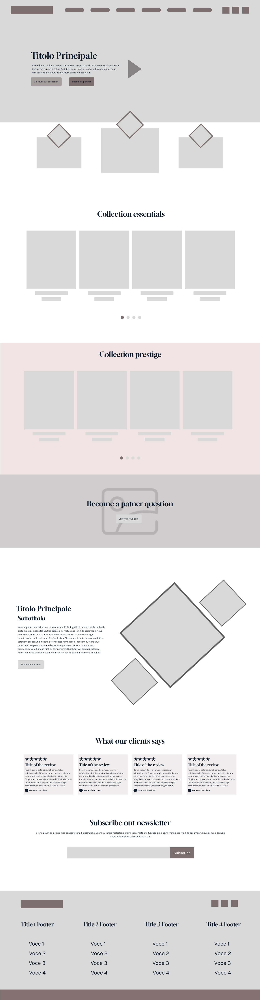

Building the strategy behind
Afous Essence.
Afous Essence started as an idea, not as a defined digital product. My role was to give that idea structure by working on positioning, user paths, information architecture, and visual direction. The challenge was to build an experience that could communicate Moroccan craftsmanship clearly, while supporting both B2C discovery and B2B decision-making.
Built from zero: there was no existing brand system, no digital structure, and no clear experience model. I worked on the strategic foundation first, so the design could grow from a coherent direction instead of relying on aesthetics alone.
MY ROLE
UX Strategist & Lead Designer
CONTEXT
E-commerce Artisan Luxury
STATUS
Low-Fi Prototyping

The Challenge
Moroccan craftsmanship carries meaning through materials, gestures, and human presence. Most digital experiences flatten that value, either by focusing too much on aesthetics or by making the experience feel generic. My goal was to define a structure that could preserve authenticity, make the brand easier to understand, and support two different decision paths: one for consumers and one for professional buyers.
Competitive Landscape & Persona Mapping
I used research to understand what this category was doing well, where it was repeating the same mistakes, and where Afous Essence could take a clearer position. The work combined competitor analysis and persona thinking to define what the experience needed to communicate, how trust should be built, and how the platform could support both B2C discovery and B2B efficiency.
Competitor Data
I analyzed 10 direct competitors to understand how brands in this space handle structure, content, SEO, social presence, and paid communication. The goal was not to compare aesthetics, but to identify recurring patterns, weak points, and market gaps that could inform the direction of Afous Essence.
To keep the analysis consistent, I used a comparative matrix and a SWOT framework for each competitor. The percentages below summarize the patterns that appeared most often across the sample.
Competitor Matrix (Strategic Summary)
I compared competitors across the dimensions that mattered most for this project: storytelling, trust, product clarity, immersive proof, B2B accessibility, and overall structure. The matrix helped me move from general impressions to a clearer strategic direction.
| UX Dimension | Kenza & Co | Beni Souk | Moroccan Bazaar | Afous Essence (Target) |
|---|---|---|---|---|
| Storytelling | Strong | Medium | Cultural | Immersive + verifiable |
| Product Pages | Verbose | Good, incomplete | Basic | Narrative + structured |
| Immersive Proof (Video/AR) | Limited | Partial | Absent | Video + QR + AR |
| Trust Signals | Implicit | Low visibility | Missing | Badges + human microcopy |
| B2B Path | Hidden | Unclear | Technical | Dedicated & guided |
| Information Architecture | Scattered | Solid | Logical | Dual-path logic |
Core Opportunity
The gap was clear. Many brands had strong visual storytelling, but weak structure, limited trust signals, and no clear B2B path. This gave Afous Essence room to position itself differently by combining emotional value with a more reliable and usable experience.
Persona Mapping (Clusters)
I grouped users into four clusters to keep the architecture focused and avoid designing a generic experience. The purpose was not to create personas for presentation, but to make different decision logics visible early in the process.
B2C Premium
Discovery-driven: story, provenance, reassurance.
B2B Professionals
Efficiency-driven: specs, assets, guided wholesale requests.
B2C Emotional
Cultural belonging: empathy, community, accessibility.
B2C Budget-aware
Trust-first: clarity, badges, low-friction checkout.
One brand, two decision logics. B2C users need discovery, reassurance, and narrative. B2B users need speed, clarity, and direct access to the information required to make decisions.
Buyer Personas + Customer Journeys (Evidence)
I developed two representative personas and mapped their journeys to test whether the structure could support different expectations. This helped me translate abstract user types into concrete content, flow, and hierarchy decisions.
Buyer Personas (2-up)
These two profiles represent the main contrast I needed to design for: a more emotional and exploratory B2C journey, and a more efficient, task-oriented B2B journey.
Journey Snapshots
The journey maps gave me a clearer basis for deciding where to place content, how much explanation was needed, and how the platform should shift between narrative depth and operational clarity.
Experience Strategy
Before moving into pages and screens, I needed a clearer strategic direction for the experience. The point was not just to define what users would do, but how the brand should be understood at each stage of the journey, and what kind of trust the platform needed to build along the way.

Future-State Journey Map. I used this to define the intended experience across phases, touchpoints, and emotional shifts before moving into more detailed UX decisions.
The Strategic Framework
This part of the work focused on defining the logic behind the experience. I was not designing screens yet. I was defining what users needed to feel, understand, and trust at different moments, so later design decisions would have a clear reason behind them.
-
Discovery-driven experience: the B2C journey needed space for context, story, and product meaning before asking users to compare or buy.
-
Trust as a design goal: provenance, maker visibility, and process transparency had to work as part of the experience, not as secondary content.
-
Dual decision logic: the platform needed to support both a slower emotional journey for consumers and a clearer, faster path for professional buyers.
Strategic Outcome
This framework became the reference point for the next steps, from information architecture to interaction patterns and content depth.
Logo Meaning, Palette & Moodboard Direction
Once the strategic direction was clear, I worked on the brand language. The goal was to create a visual system that felt connected to Moroccan identity without falling into decorative clichés. I wanted the brand to feel rooted, contemporary, and credible across both storytelling and commerce. The word Afous (hand) becomes a symbol of craft, care, and human-made value: “the hand of Morocco in every detail”.
Color Palette Inspired by Morocco
I built the palette around tones that could reference materials, land, and craft without becoming too literal. The result is warm and grounded, but still controlled enough to support a premium digital experience.
Desert Terra
#D1A043
Atlas Forest
#4A6A5A
Clay
#A5542B
Typography played an important role in balancing expression and usability. I chose Gloock for headings to bring character and cultural weight, and Karla for body text to keep the interface readable and practical.
Typography Hierarchy
- Headlines Gloock · 36–48 pt
- Subheadings Gloock · 24 pt
- Body text Karla · 11–13 pt
- Captions & microcopy Karla · 10 pt
The typographic system was designed to support storytelling, but not at the expense of clarity. The contrast between the two typefaces helped the brand feel distinctive while keeping the interface usable.
Brand Direction
I used the moodboard to define tone before moving further into the interface. It helped clarify the material references, visual atmosphere, and level of refinement the brand needed.
Moodboard Materials, textures, palette, atmosphere
The direction was meant to feel tactile, human, and visually calm, while still supporting trust, clarity, and product value across both B2C and B2B touchpoints.
Logo Meaning
The logo was designed to connect craft and identity in a simple, usable form. I used the idea of the Berber hand, “Afous”, as a starting point, then translated it into a cleaner and more minimal symbol that could work across digital touchpoints. The abstract symbol is inspired by the Berber hand, “Afous”, reinterpreted through a minimal and geometric language.
- Pictogram: human gesture, tradition, culture.
- Afous: “hand” in Berber — craft and identity.
- Essence: design purity, refinement, intention.
Low-Fidelity Prototyping (Method > Pixels)
At this stage, the goal was to test structure before visual refinement. I used low-fidelity artifacts to validate how storytelling, navigation, and task-oriented actions could coexist without creating friction.
Information Architecture
I designed the information architecture to support two different ways of moving through the platform: a more exploratory path for consumers and a more direct path for professional buyers.

This sitemap shows the main content hierarchy, key entry points, and the relationship between B2C discovery paths and B2B operational needs.
User Flow Comparison
I mapped two separate flows to reflect the difference between users who need time, context, and reassurance, and users who need fast access to information and actions.


The two flows share the same platform, but not the same pacing. I used that difference to define where the experience should feel richer and where it should become more direct.
Low-Fidelity Interaction Design
These wireframes were used to test whether the structure could support both narrative depth and practical decision-making before moving into high-fidelity design.


At this point, the priority was not visual polish. It was making sure the experience could hold both brand storytelling and user tasks without one getting in the way of the other.